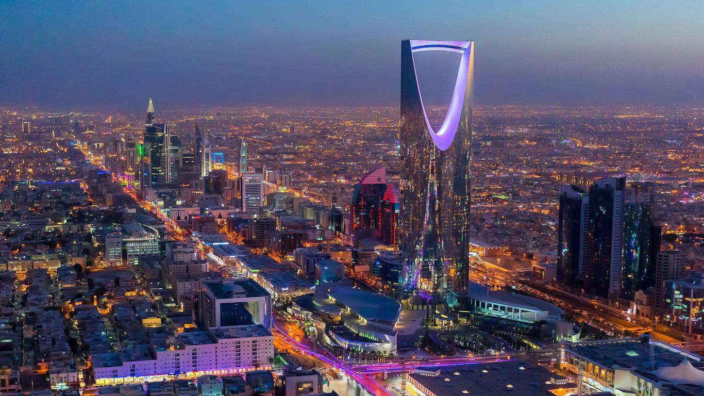
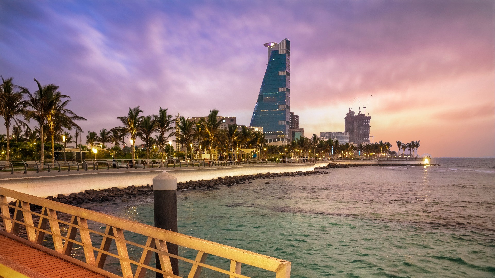
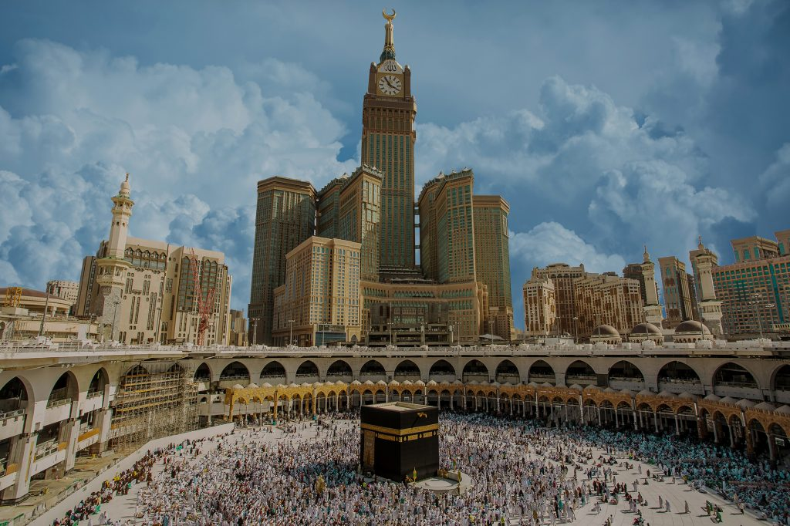
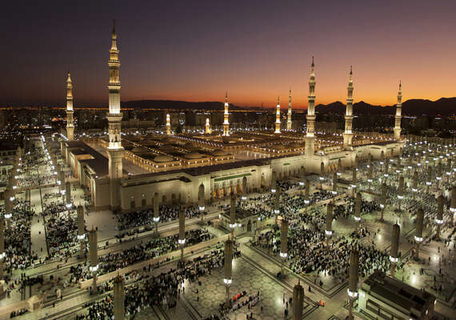
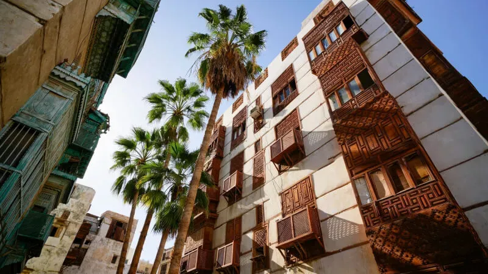
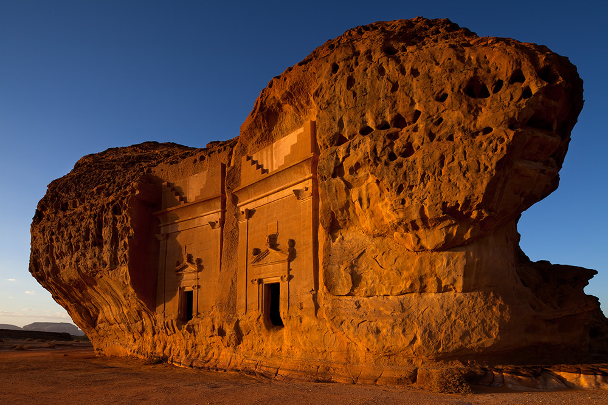
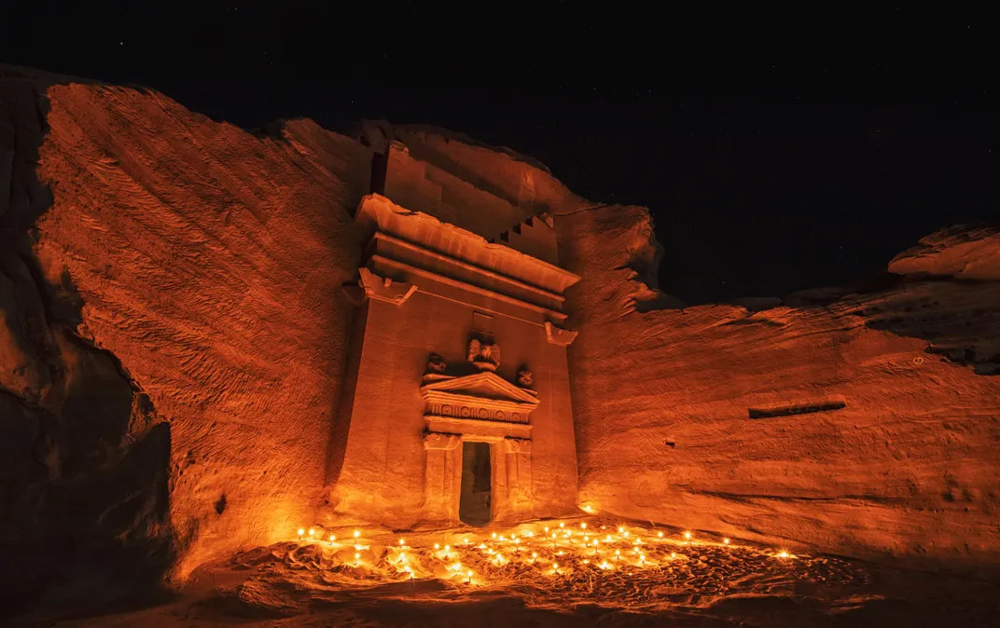

Key Regions and Their Iconic Landmarks

Riyadh
Home to the iconic Masmak Fortress and the stunning Edge of the World.

Jeddah
Known for its vibrant Corniche and historic Al-Balad district.

Al-Ula
Famous for its ancient rock formations and Madain Saleh heritage site.

Makkah
Visit the Kaaba, the holiest site in Islam, and experience a spiritual journey.

Madinah
Explore the Prophet's Mosque, a sanctuary for millions of pilgrims worldwide.
Riyadh

Masmak Fortress is a symbol of Saudi Arabia's unification and rich history. Learn more

Edge of the World offers stunning panoramic views of Saudi Arabia's vast desert. Learn more
Jeddah

Al-Balad is Jeddah's historic district, showcasing traditional architecture. Learn more

The world's tallest fountain, a landmark on Jeddah's coastline. Learn more
Al-Ula

Madain Saleh is a UNESCO World Heritage site featuring Nabatean tombs. Learn more

Hegra is an archaeological gem with intricate carvings and ancient history. Learn more
Makkah and Madinah

The Kaaba in Makkah is the holiest site in Islam, attracting millions annually. Learn more

The Prophet's Mosque in Madinah is a spiritual hub for Muslims worldwide. Learn more